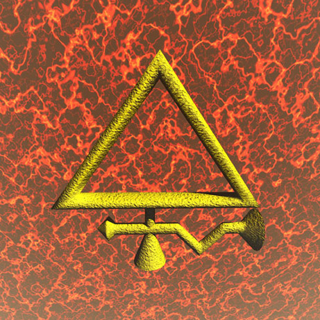

|  |
Discovered by : Known to ancient civilizations
Origin : The name may have one or two derivations : the Sanskrit ‘sulvere’ or the Latin ‘sulphurium’, both meaning sulfur.
Description :
Occurs in large deposits as yellow crystals. It is stable in air and water but will burn if ignited, giving off the acrid gas, sulfur dioxide, its most famous compound, which is used to make sulfuric acid, the single most important industrial chemical. Sulfur dioxide is also produced when coal and oil are burned, and contributes towards so called ‘acid rain’. Sulfur is essential to all living things and there is a sulfur cycle in nature. The average human contains 140 grams and takes in about 1 gram a day.
|